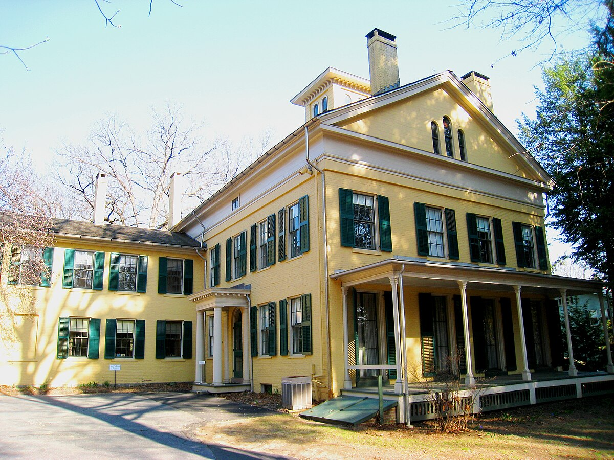

Al regresar a Amherst, Emily retomó la vida hogareña. Pasaba tiempo con su hermana Lavinia (a quien todos llamaban de manera cariñosa “Vinnie”), que fue su compañera y amiga durante toda la vida. Lavinia adoraba a su hermana mayor y admiraba su talento poético, por eso siempre procuró que en la casa se mantuviese el ambiente calmado que Emily necesitaba par escribir en soledad. Además de trabajar en su invernadero, observar la naturaleza y desarrollar su poesía, Emily iba a la iglesia, salía a comprar, paseaba a su perro Carlo y asistía tanto a exposiciones como a funciones benéficas. También disfrutó de diversas amistades y de las reuniones sociales y fiestas que se celebraban en la casa colindante a la suya, donde vivían su hermano mayor Austin y su amiga de la infancia Susan Huntington Gilbert, que habían contraído matrimonio en 1856.
Emily y Susan, que fueron compañeras de estudios en la Academia de Amherst, mantuvieron una extensa correspondencia durante toda la vida, pese a vivir a apenas cien metros de distancia. Estas cartas ponen de manifiesto que las dos mujeres fueron amigas, amantes y confidentes. De hecho, Susan fue una de las pocas personas a las que Emily dejó leer sus poemas e incluso le sugirió algunos cambios (que Emily nunca llegó a realizar). Varios biógrafos de Emily Dickinson creen que los más de 300 poemas de amor de la autora fueron escritos enteramente para Susan. Entre ellos destaca el evidente “Una Hermana tengo en nuestra casa”, “Noches salvajes” y “Poseer una Susan mía / es de por sí una dicha”. Pero aquella no fue la única experiencia amorosa de Emily Dickinson. En sus poemas y cartas hay referencias a otra historia cuyo final trágico atormentó a la autora. Los teóricos se dividen en dos posibilidades. Unos apuntan a que la persona a la que van dirigidos los poemas fue un joven a quien sus padres le prohibieron seguir viendo. Otros creen que la poeta se enamoró de un pastor protestante casado que huyó de Amherst para evitar que se diera el romance.
Durante su juventud y madurez, Emily se puso en manos de hombres sabios, mayores que ella, a los que pidió consejo sobre la creación artística y quienes la instruyeron y le recomendaron lecturas. El último fue Thomas Wentworth Higginson, a quien la poeta conoció cuando tenía 31 años. En todas las cartas que intercambiaron, Emily siempre se dirigió a él como “Maestro”. Preocupada por la calidad de su obra, Dickinson le escribió una vez: “Señor Higginson: ¿está usted demasiado ocupado? ¿Podría hacerse un momento para decirme si mis poemas tienen vida?”.
El maestro le sugirió una serie de cambios para que su poesía fuera más “publicable”, pero ella se negó a incorporarlos, afirmando que estos eliminaban su identidad como poeta y su voz original y única como artista. Tras la muerte de Emily, Higginson dijo de los poemas: “Después de cincuenta años de conocerlos, se me plantea ahora como entonces el problema de qué lugar debe asignárseles dentro de la literatura. Emily se me escapa, y hasta hoy me encuentro aturdido ante semejantes poemas”. Emily Dickinson solo dejó leer su obra a contados profesionales de la literatura y a su amada Susan. Algunos de ellos fueron el profesor Samuel Bowles, la escritora Helen Hunt Jackson, el editor Thomas Niles y el crítico y escritor Josiah Gilbert Holland. En vida, Emily únicamente publicó seis poemas. Los cuatro primeros aparecieron en el diario local que dirigía su amigo Samuel Bowles, aunque se desconoce si la autora dio su consentimiento. El quinto, titulado “The Snake” se publicó en The Springfield Republican, en contra de la voluntad de Emily. El último formó parte de la antología Una mascarada de poetas, que en Hellen Hunt Jackson editó en 1878, con la condición de que su firma no apareciera.
A partir de los cincuenta años, Emily se volvió más estricta ante la negativa de publicar. Dejó de frecuentar a sus amigos, se negó en varias ocasiones a recibir visitas en casa y empezó a vestir únicamente de blanco, una extraña costumbre que la acompañó hasta el final de sus días. Dickinson se encerró en casa, obsesionada con su creación poética, y dedicó todos sus esfuerzos a desarrollar la extraordinaria obra por la que se la conoce. Hacia el final de su vida, Emily apenas abandonó su habitación. Pasaba días enteros en ese cuarto recubierto de madera, decorado con cortinas y sábanas blancas, inclinada sobre el escritorio, observando a través de la ventana o reuniendo sus poemas en pequeños libros que encuadernaba a mano. En 1884, la muerte de su sobrino, el hijo menor de Austin y Susan, la dejó devastada. Dos años más tarde, escribió su última carta en la que decía “me llaman”, refiriéndose a la muerte, y dejó el mundo el 15 de mayo de 1886.
Tras haber fallecido, su hermana Lavinia se adentró en la misteriosa habitación en la que Emily había permanecido durante tanto tiempo. Ahí encontró un baúl en el que descubrió los más de 40 volúmenes encuadernados y casi dos mil poemas que Emily había escrito a lo largo de su vida. Versos a lápiz en trozos de periódicos, sobres vacíos y pequeños papeles sueltos. Pese a que la poeta hizo prometer a Vinnie que quemaría su obra cuando ella muriera, esta respetó la voluntad de su hermana de no publicar nada en vida, pero decidió que el talento de Emily Dickinson no podía quedar en un baúl ni ser consumido por las llamas. Así, Lavinia Dickinson se convirtió en la primera compiladora y editora de la obra de Emily Dickinson. Ella misma le aseguró al biógrafo de la escritora, George Frisbie Whicher, que “la poeta lírica más memorable de Estados Unidos había vivido y muerto en el anonimato”.